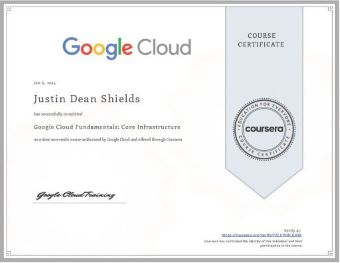
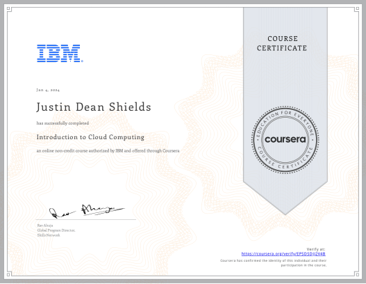
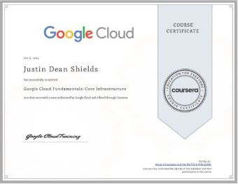
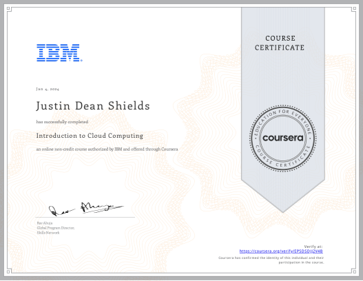

information
About Me
About Me
I'm Justin Shields & an
I am currently a graduate student at Florida International University. I have a Bachelor's in Computer Science and I am currently in the process of obtaining a Master's in Computer Science. I am excited to utilize the skills I've acquired to advance my future career. I am also enthusiastic about gaining valuable experience while collaborating with a dedicated team of professionals to contribute towards the company's success.
Website: techwithjustin.net
Ability
My skills
✓ Experienced with Cloud Computing
✓ Knowledge of many IT concepts and principles
✓ Completion of projects to demonstrate my knowledge
✓ Proficient in multiple aspects of programming
✓ Proactive and results-driven
✓ Highly adaptable to diverse workloads
✓ Experienced in Python
What I have achieved
Awards & Certifications
- AWS Certified Solutions Architect – Associate (Verification Link)
- AWS Certified Cloud Practitioner (Verification Link)
- Bachelor's in Computer Science (April 2024)
- Graduated on the Dean's List (April 2024)
- Completed Google Cloud Fundamentals: Core Infrastructure course
- Completed Introduction to Cloud Computing by IBM course

 



Projects
Creative Work
Cloud Resume Challenge
This website you are looking at, is an end product of the cloud resume challenge.
The project tasks participants with creating a serverless website using HTML and CSS, which is
automatically deployed to an S3 bucket and Cloudfront CDN through a CI/CD pipeline. This pipeline,
operating on GitHub Actions, automates backend setup with AWS SAM/CloudFormation and integrates Python
unit tests. Additionally, it involves setting up a REST API via AWS API Gateway, powered by AWS Lambda
(Python), to manage updates to a DynamoDB table.
Technologies Utilized: AWS S3, Route53, Certificates Manager, CloudFront, API Gateway, Lambda,
DynamoDB, AWS SAM, CloudFormation, git, Github, Github Actions, Python (Boto3), HTML, CSS, W3,
JavaScript.
Cloud Resume Challenge Github Repository
Geek Text API
This project was about the creation of a Rest API using Scrum methodology to support an online
web application bookstore. Throughout this project, I learned the benefits of using Scrum methodology
to complete this semester long project.
Technologies Utilized: JavaScript, Postman, Github, git, MongoDB, JSON, Teamwork, Agile Methodologies,
Scrum.
Geek Text API Github Repository
Password Security Check Tool
This project focuses on developing a command-line tool that helps users verify if their passwords
have been exposed in any data breaches. Utilizing the "Have I Been Pwned" API, the tool employs SHA-1
hashing to safely check passwords without revealing the actual password to external networks.
Technologies Utilized: Python, Requests Library, Hashlib, Git, GitHub, Command Line Interface (CLI),
Have I Been Pwned API
Password Security Check Tool Github Repository
Hacker News Data Scraper
This project involves developing a Python script that automates the scraping of news stories from the
first two pages of Hacker News. The script specifically outputs posts that have over 99 votes. This
tool is designed for those who wish to quickly access the top posts without navigating through the site
manually.
Technologies Utilized: Python, Requests Library, BeautifulSoup, Git, GitHub, Command Line Interface (CLI)
Hacker News Data Scraper Github Repository